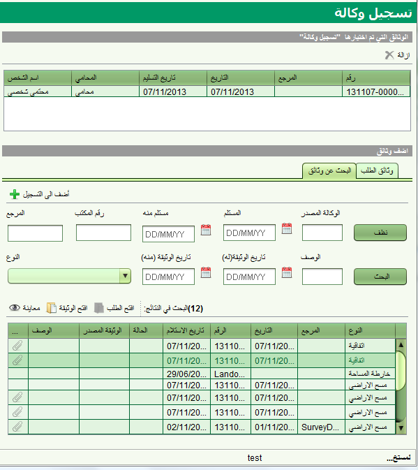

بعض انواع الوثائق مثل الوكالات والوثائق المعيارية يجب اولا تسجيلها في "سولا" قبل ان يتم الرجوع اليها من الطلبات لدعم او تبرير الحركة على الملكية. شاشة تسجيل الوثائق تسمح لك بتسجيل هذه الوثائق الرسمية , كما تسمح بالغاء تسجيلها عندما يتم الغاء او سحب هذه الوثائق. للوصول الى شاشة تسجيل الوثائق عليك اولا ان تودع طلبا فيه واحدة او اكثر من الخدمات التالية: تسجيل وكالة,تسجيل وثيقة رسمية,الغاء وكالة او سحب وثيقة معيارية. عند ايداع الطلب وتعيينه, عليك بدء الخدمة من شاشة تفاصيل الطلب .

قبل البدء باستخدام شاشة تسجيل وثبقة, اضف الوثيقة الى الطلب حتى تظهر في قائمة وثائق الطلب. لتسجيل وثيقة, اختر الوثيقة من قائمة وثائق الطلب ثم اضغط
 للتسجيل. تستطيع اضافة عدة وثائق للتسجيل . اذا قمت بالخطا باضافة وثيقة الى قائمة التسجيل تستطيع ازالتها
للتسجيل. تستطيع اضافة عدة وثائق للتسجيل . اذا قمت بالخطا باضافة وثيقة الى قائمة التسجيل تستطيع ازالتها
عند اضافة وثيقة وكالة للتسجيل, سوف يطلب منك اضافة اسم المحامي واسم السخص الذي تنطبق عليه الوكالة (مثال المفوض)

انظر ايضا